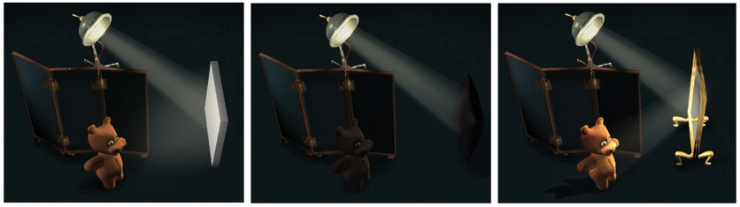
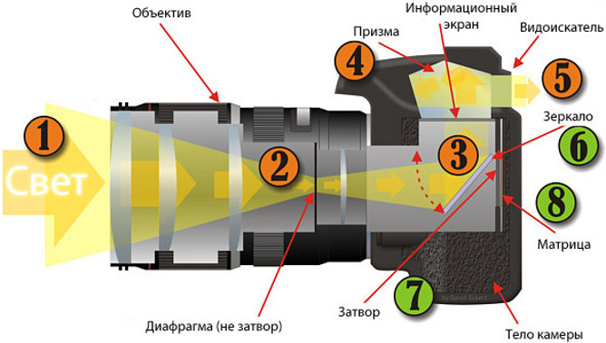
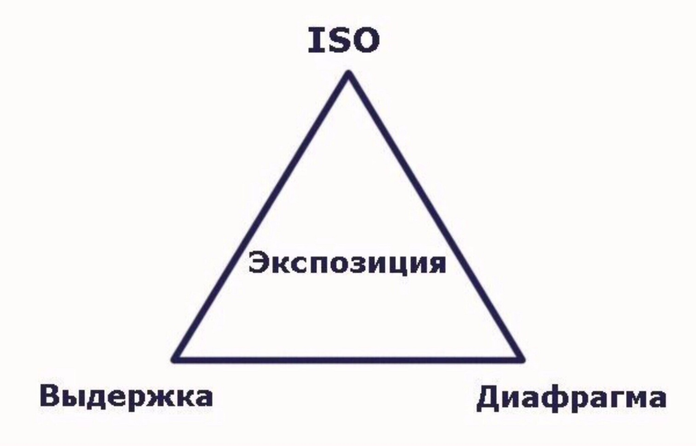

“Зрение — это возможность воспринимать внешний мир во всем его многообразии и красоте” На самом деле свет, отраженный от предмета, попадает на сетчатку, после чего мозг обрабатывает полученную информацию.
Зеркальная камера состоит из корпуса (обычно — «тушка»,»боди» — от английского body ) и объектива («стекло», «линза»). Внутри корпуса цифровой камеры стоит матрица, которая фиксирует изображение
Когда вы смотрите в видоискатель, свет проходит через объектив попадает в видоискатель или на экран. Таким образом вы видите через объектив то, что будете снимать. В момент, когда вы нажимаете спуск, открывается затвор, свет попадает на матрицу и фиксируется. Таким образом получается фотография
Экспозиция - количество света, получаемого светочувствительным элементом. Количество получаемого света регулируется 3 параметрами:
Больше света – светлее фото. Меньше света – темнее.
А если хочешь узнать подробности, то учи матчасть) Подробности